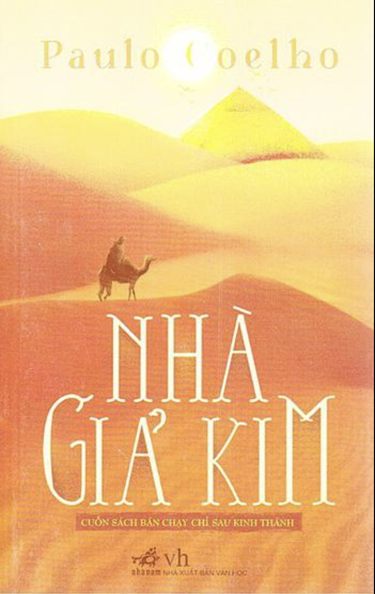

Giết con chim nhại - Harper Lee
Tóm tắt: truyện xoay quanh cuộc sống hàng ngày của gia đình Finch và sự thay đổi trong xã hội khi Atticus Finch nhận trách nhiệm bảo vệ Tom Robinson, một người đàn ông đen bị buộc tội hiếp dâm một phụ nữ trắng. Scout và Jem học được nhiều bài học về sự công bằng, lòng nhân ái và sự đấu tranh chống lại độc ác.
Bắt trẻ đồng xanh - J. D. Salinger
Tóm tắt: Cốt truyện của "Bắt trẻ đồng xanh" của J.D. Salinger xoay quanh nhân vật chính Holden Caulfield, một thanh niên 16 tuổi bị đuổi học và sau đó lang thang tại New York. Trongs thời gian này, Holden trải qua nhiều trải nghiệm và gặp gỡ nhiều người, trong đó có những người gây ảnh hưởng đến cuộc sống và quan điểm của anh. Cuộc hành trình của Holden là một sự tìm kiếm, nhưng anh thường xuyên cảm thấy bất mãn với thế giới xung quanh và có suy nghĩ tiêu cực về cuộc sống và xã hội. Tác phẩm tập trung vào tâm trạng và tình trạng tâm lý của Holden, mang lại cho độc giả cái nhìn sâu sắc về tâm hồn của một thanh niên đối mặt với thế giới người lớn.
Rừng Na Uy - Haruki Murakami
Tóm tắt: là câu chuyện của Toru Watanabe, một sinh viên trường đại học ở Tokyo vào những năm 1960. Anh ta nhớ về thời sinh viên khi gặp Naoko, một cô gái đẹp nhưng mang theo những nỗi đau tâm lý nặng nề. Họ chia sẻ những khoảnh khắc yên bình tại rừng Na Uy, nơi Naoko điều trị tâm thần. Cuộc sống tình cảm và hành trình tìm kiếm ý nghĩa cuộc sống của Toru là những khía cạnh chính của câu chuyện, trong một bối cảnh Nhật Bản đang trải qua biến động xã hội và văn hóa.
Nhà giả kim - Paulo Coelho
Tóm tắt: kể về Santiago, một người chăn cừu Tây Ban Nha, bắt đầu hành trình tìm kiếm "Nhà Giả Kim" để biến kim loại thành vàng. Trong cuộc hành trình này, anh ta trải qua nhiều thách thức và gặp gỡ những người giúp đỡ. Cuộc phiêu lưu không chỉ là về việc biến kim loại, mà còn về sự tự khám phá, hiểu biết về thế giới và ý nghĩa cuộc sống. Tác phẩm thường được xem như một câu chuyện tâm linh với thông điệp về sự trưởng thành và tìm kiếm ý nghĩa sâu xa.